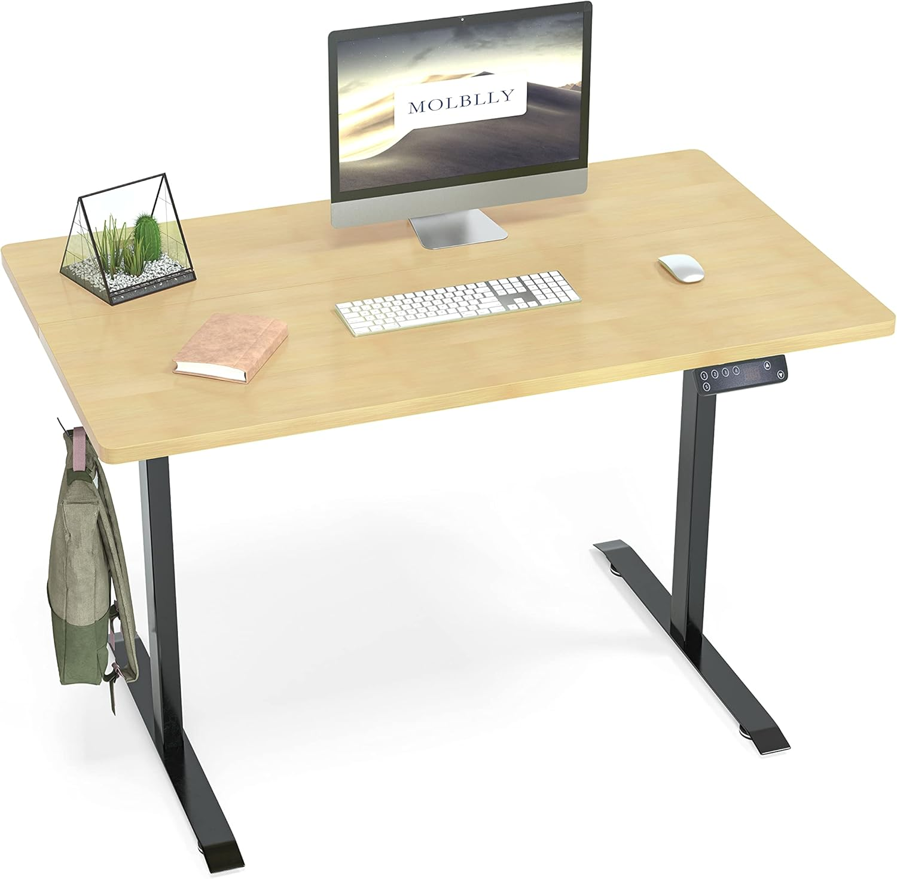

Health Benefits of using Standing Desks
Reduces Risk of Chronic Diseases
- Lower Risk of Heart Disease: Prolonged sitting has been linked to an increased risk of cardiovascular diseases. Standing more often may help reduce this risk.
- Decreased Risk of Diabetes: Standing desks may help lower blood sugar levels, which is beneficial for managing and preventing type 2 diabetes.
Improves Posture
- Reduced Back Pain: Standing encourages better posture and can help alleviate or prevent lower back pain associated with sitting for long periods.
- Improved Spinal Alignment: Standing helps maintain the natural curve of the spine, reducing the risk of spinal issues.
Increases Energy and Productivity
- Higher Energy Levels: Users often report feeling more energized and less fatigued throughout the day when using a standing desk.
- Enhanced Productivity: Some studies suggest that standing desks can boost productivity and focus by keeping the user more alert.